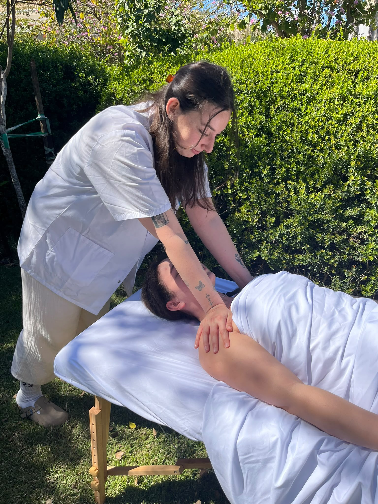
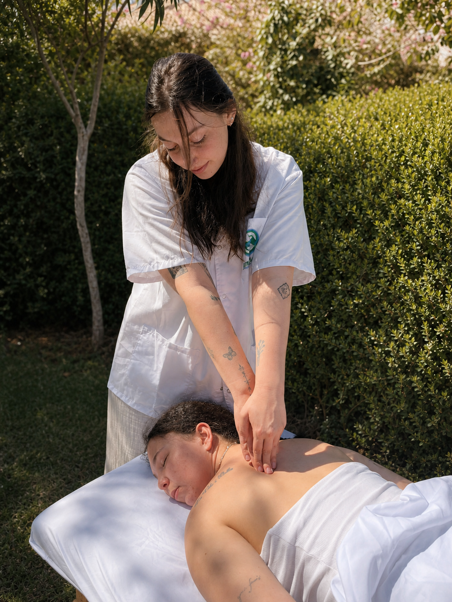
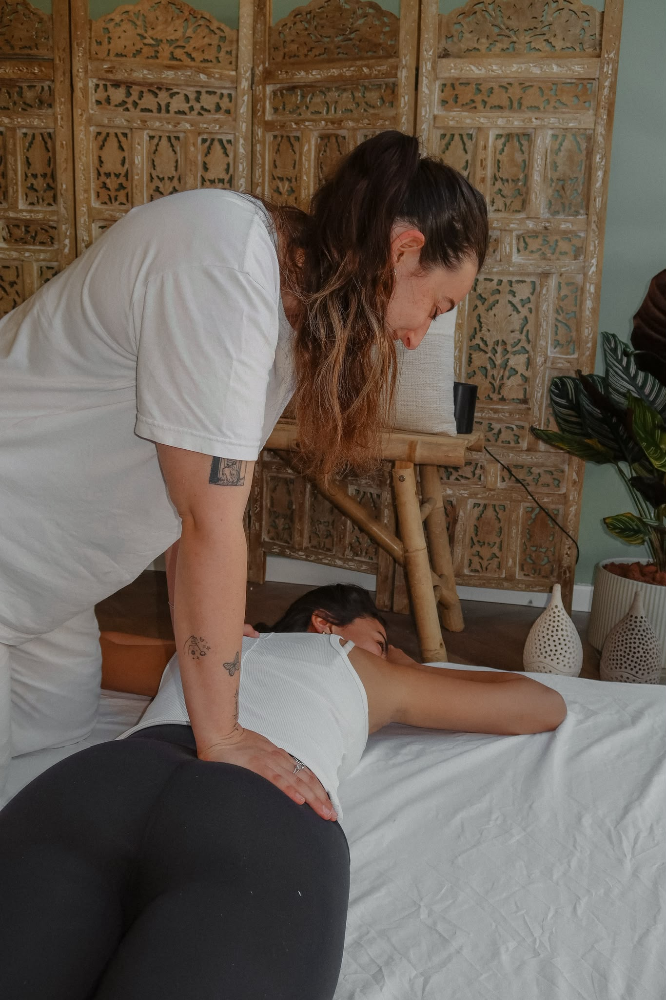
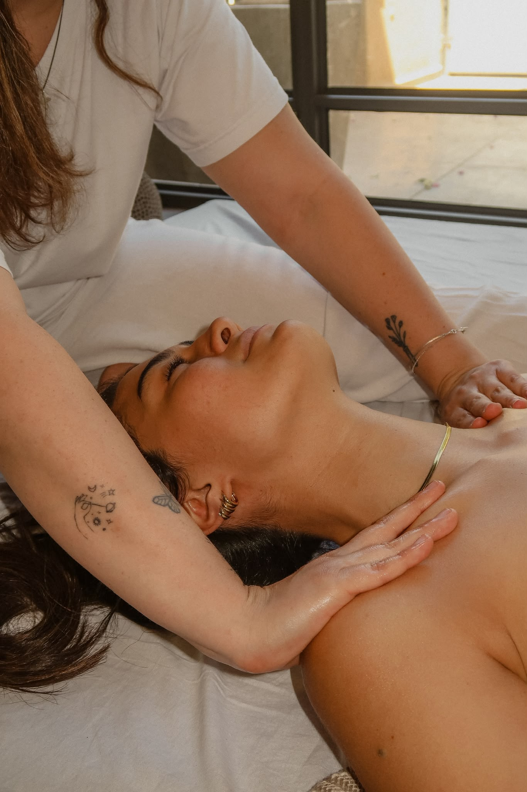
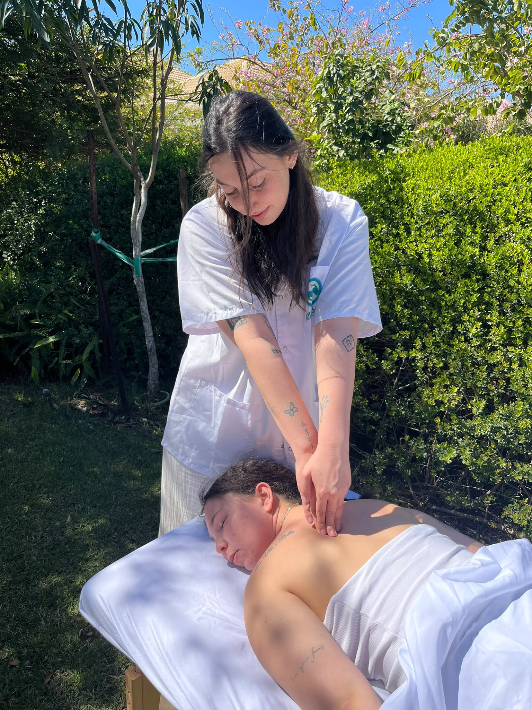

מוסמכת בשיאצו
הסמכה מטעם מכללת רידמן

שיאצו · גוף · נפש
טיפול שיאצו קשוב ומותאם אישית, לשחרור עומס ומתחים, להחזרת התנועה וליצירת מרחב של רוגע בגוף.
הסמכה מטעם מכללת רידמן
בשנה הרביעית והאחרונה במסלול הארבע־שנתי
סביבה רגועה ומכילה
פרטי המיקום יימסרו בתיאום
אודות
שמי נטע, מטפלת מוסמכת בשיאצו מטעם מכללת רידמן וסטודנטית בשנה הרביעית והאחרונה במסלול הארבע־שנתי לרפואה סינית TCM. אני מאמינה שהגוף מחזיק חוכמה עמוקה, ושמגע מדויק והקשבה אמיתית יכולים לפתוח מרחב שמילים לא תמיד מגיעות אליו.
כל מפגש נבנה סביב מה שמתאים לך באותו רגע. באמצעות מגע מכוון, לחיצות ונוכחות מלאה, נוצר מקום שבו אפשר להאט, לנשום ולתת לגוף לחזור לאיזון.

הכשרה מקצועית
01
הכשרה מקיפה במכללת רידמן, המשלבת ידע תיאורטי, תרגול מעשי וניסיון קליני, הובילה להסמכה מקצועית בטיפול בשיאצו.
02
כעת בשנת הלימודים הרביעית והאחרונה בתוכנית הארבע־שנתית לרפואה סינית. בשלב זה ההסמכה הטיפולית היא בשיאצו בלבד.
03
שנת הלימודים האחרונה משלבת עבודה קלינית והעמקה באורתופדיה, גינקולוגיה, דרמטולוגיה, רפואת ילדים ורפואה מודרנית.
הטיפולים
השיאצו עובד באמצעות לחיצות, מתיחות והנעת הגוף, במטרה להפחית עומס ולעודד תחושה של רווחה ותנועה.

טיפול במגע המתבצע בלבוש מלא ונוח, על מזרן או פוטון. הטיפול משלב לחיצות, הישענות ומתיחות לאורך הגוף, בקצב ובעוצמה המותאמים לך.
מוקד הטיפול: שחרור עומס, עידוד תנועה ויצירת תחושת רוגע.

טיפול עדין המותאם לשלב ההיריון ולתחושה באותו יום. העבודה נעשית בתנוחות נוחות ונתמכות, תוך הקשבה מלאה לגוף ולקצב המתאים לך.
מוקד הטיפול: נוחות, מנוחה ותמיכה בגוף המשתנה.
טיפול בקצב איטי וקשוב, המשלב מגע רציף, לחיצות ונשימה. מתאים במיוחד לתקופות שבהן קשה להאט או למצוא מרחב למנוחה.
מוקד הטיפול: האטה, נשימה ותחושת מרחב בגוף.
הטיפול הראשון
לפני שמתחילים, נשב לשיחה קצרה ונבין יחד מה מביא אותך לטיפול, איך הגוף מרגיש ומה היית רוצה לקבל מהמפגש. משם נבנה טיפול אישי, בקצב ובעוצמה שנכונים לך.

מחירון
טיפול בודד
₪380
60 דקות
חבילה של 3 טיפולים
₪990
במקום 1,140 ₪, חיסכון של 150 ₪
יצירת קשר
אפשר להשאיר פרטים ולשלוח אליי הודעה ישירות ב־WhatsApp. אחזור אלייך בהקדם.